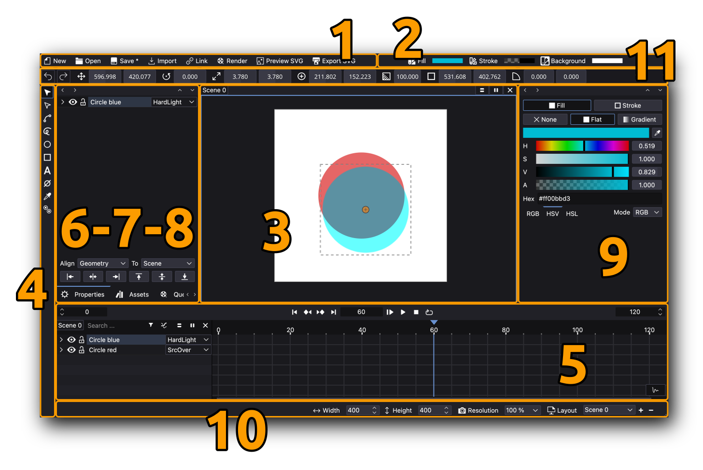
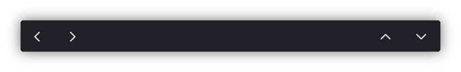
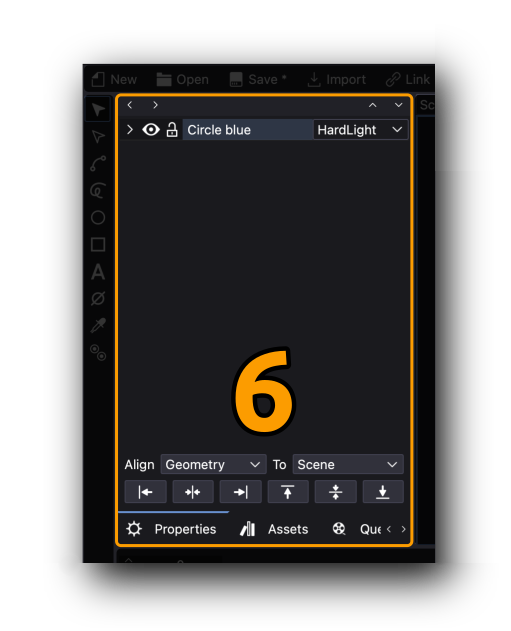
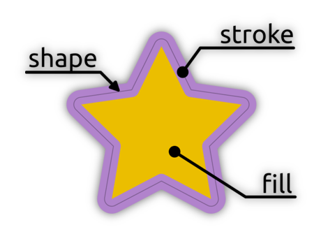
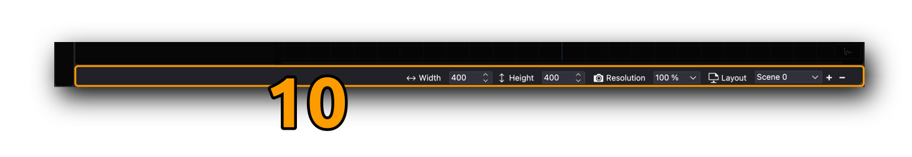

User Interface

Some panels are rearrangable by pressing their left-right-up-down buttons:

The Timeline can be splitted horizontally or vertically to allow better parameter keyframe editing:

Main Toolbar

The main toolbar provides fast access to the most used commands related to creating/saving projects and importing and exporting assets into the active project.
… expand on the right-click menu …
Color Toolbar

The color toolbar provides fast access to edit colors, types (none, flat or gradient) and other parameters of selected shapes or the scene background:
-
Fill: Allows users to set the interior color, gradient or “no color” of selected shapes. Users can choose between solid colors (flat), linear or radial gradients.
-
Stroke: Controls the outline of shapes, including its color, width, and style. Users can define other parameters such as width, join and cap styles.
-
Background: Sets the background color of the canvas or scene. This option ensures consistency in visual presentation across the workspace.
Mouse actions on hover is supported:
scroll= change huescroll+shift= change valuescroll+ctrl/cmd= change saturationclick= open fill/stroke widget
… expand on the right-click menu …
Viewer

The Viewer is the central workspace where users can visualize and interact with their projects, it can also be called Canvas. It displays the active composition or animation and allows for real-time previews and adjustments.
The Canvas can be zoomed in and out or fitted in some ways or even reset to default size. Check Menu > View > Zoom for a full list of options.
On Windows and Linux the mouse wheel can zoom in/out, on macOS add the option key when using the mouse wheel. Gestures for pan, zoom and smart zoom is supported on macOS.
Shift + Ctrl/Cmd++= Zoom in (We should change this to not include shift!)Shift + Ctrl/Cmd+-= Zoom Out (We should change this to not include shift!)Ctrl/Cmd+1= Reset zoomCtrl/Cmd+0= Fit to canvasCtrl/Cmd+9= Fit to canvas width
Tools

The Toolbar contains a set of tools to create shapes, helpers and some others to edit already created objects.
-
Object selection mode: Allows users to select and manipulate entire objects on the canvas. This mode is essential for positioning, scaling, and rotating objects.
-
Point selection mode: Enables users to select and modify individual points or vertices of an object, offering fine control over shapes and paths.
-
Path: Creates precise vector paths by placing anchor points and defining curves. Ideal for drawing custom shapes and lines.
-
Hand-drawn Path: Allows freehand drawing of paths, giving users more flexibility and a natural drawing experience.
-
Circle: Draws perfect circles or ellipses. Users can define dimensions and position on the canvas.
-
Rectangle: Creates rectangular or square shapes. Useful for building structured layouts and designs.
-
Text: Adds text elements to the canvas. Users can adjust font, size, alignment, and other typographical properties.
-
Null object: Adds an invisible reference object that can be used to group or control other elements in the composition.
-
Color picker: Enables users to sample and apply colors directly from the canvas or predefined palettes.
-
Global/Local Pivot Toggle: Switches between global and local pivot points, allowing more precise control over transformations and rotations.
… expand on the right-click menu …
Timeline

The Timeline is where animations and keyframes are managed. Users can control timing, easing, curves of every object parameter. All the hierarchy of shapes, layers, groups, helpers, etc. are displayed using the “layer concept”, that is, objects on top of the list lay in the canvas on top of other objects that lay below.
There is an option to filter the hierarchy to edit the objects that are listed.
It is possible to set a Blending mode for every layer (or object).
Properties

By default the Properties panel displays the attributes of just the selected object, layer, group, etc.
In the case of selecting a Text object, then a panel with text parameters are shown.
At the bottom of the Properties panel there are a few options to easily align objects in the canvas relative to the canvas itself or other shapes.
Assets

The Assets panel manages linked files, images, audio, and other resources used in the project. By clicking the secondary mouse button in an asset it is possible to:
-
Reload: reads the file again from source.
-
Replace: it lets the user select another file to replace the already linked one.
-
Remove: it completely removes the object from the project.
Queue

The Queue section manages rendering tasks and export jobs. Users can monitor the progress of ongoing processes and manage output settings.
Fill and Stroke

The Fill and Stroke panel allows users to control the color, gradient, and outline (stroke) properties of objects. It provides precise control over visual styles.
Every shape has 2 parts:
- Fill: the area contained in the drawn shape
- Stroke: the outline drawn along the shape

Fills and Strokes have 3 options to be drawn:
- None: the element disables or turns invisible
- Flat: the element is colored with a flat or constant color
- Gradient: the element is colored using a gradient which is a transition of 2 or more colors. It can be linear or radial.
In the previous image the fill changes from left to right: none, flat, linear gradient and radial gradient.
Preferences

The Preferences menu contains settings for customizing scenes, preview resolution and layouts.
It might be important to note that it is also possible to fast edit Start/End scene frames at the Timeline playback row, using the Left and Right spinboxes:

Toolbox

This toolbar with dynamic buttons exposes most used parameters of just one selected object for easy and fast editing. It is even possible to animate values or use Shift modifier to edit X and Y values at the shame time. Exposed parameters change depending on the nature of the shape or object.
This is a new feature and will be improved in the near future to allow multiple selection and other commonly used parameters.